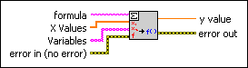
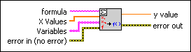

Eval Multi-Variable Scalar VI
Owning Palette: 1D & 2D Evaluation VIs
Requires: Full Development System
Calculates exactly one function value based on a given formula.

 Add to the block diagram Add to the block diagram |
 Find on the palette Find on the palette |
Owning Palette: 1D & 2D Evaluation VIs
Requires: Full Development System
Calculates exactly one function value based on a given formula.

| Add to the block diagram |
Find on the palette |
 |
formula is a string representing the formula of n independent Variables. The formula can contain any number of valid variables. |
 |
X Values is an array of x values corresponding to the n Variables. |
 |
Variables is an array of strings representing the n independent variables of the given formula. There is a one-to-one relation between Variables and X Values. |
 |
error in describes error conditions that occur before this node runs. This input provides standard error in functionality. |
 |
y value is the value of formula(X Values). |
 |
error out contains error information. This output provides standard error out functionality. |
The VI calculates the function using the following equation.
y = f(x1, x2, …, xn)
The following inputs result in y value 3.00:
 | Note This VI calculates only one value of a given n dimension function. To calculate a collection of function values, use the Eval Multi-Variable Array, Parse Formula String, and Eval Parsed Formula String VIs. |